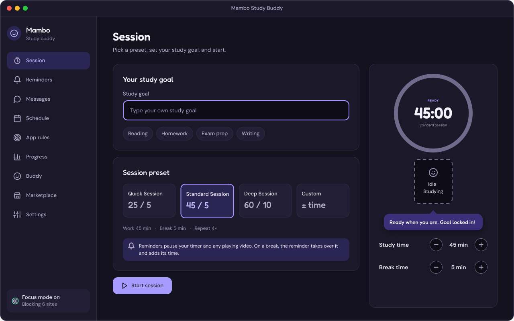
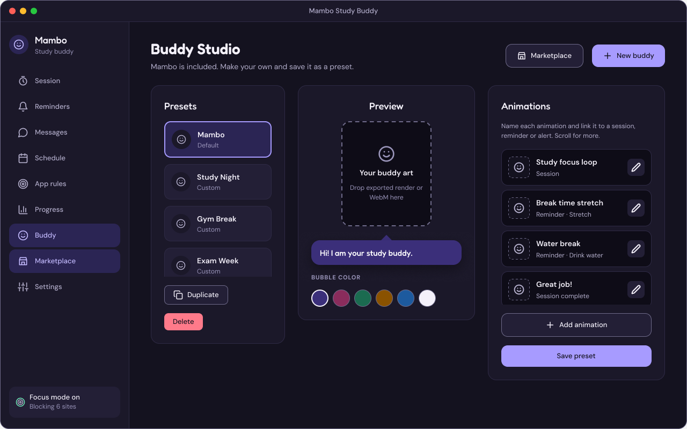
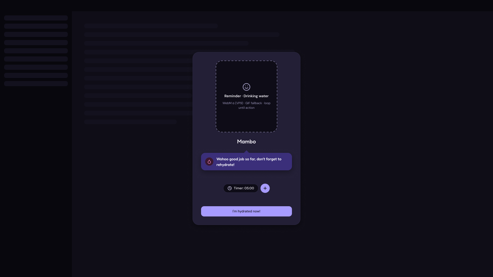
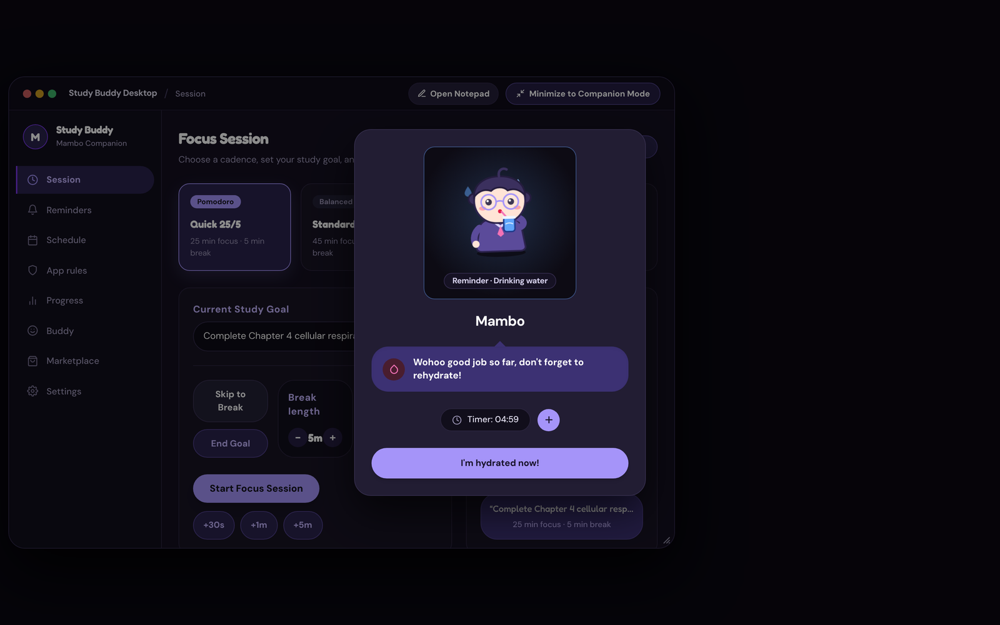
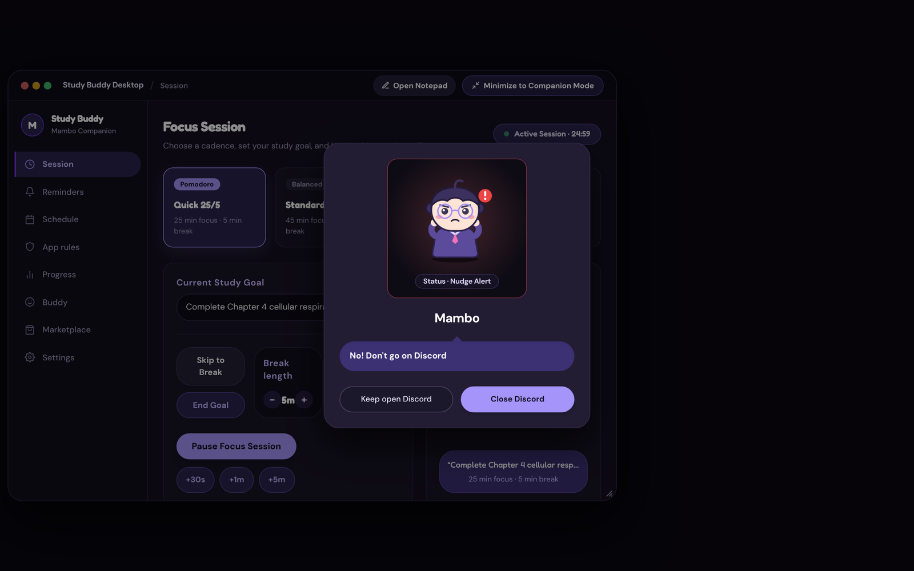
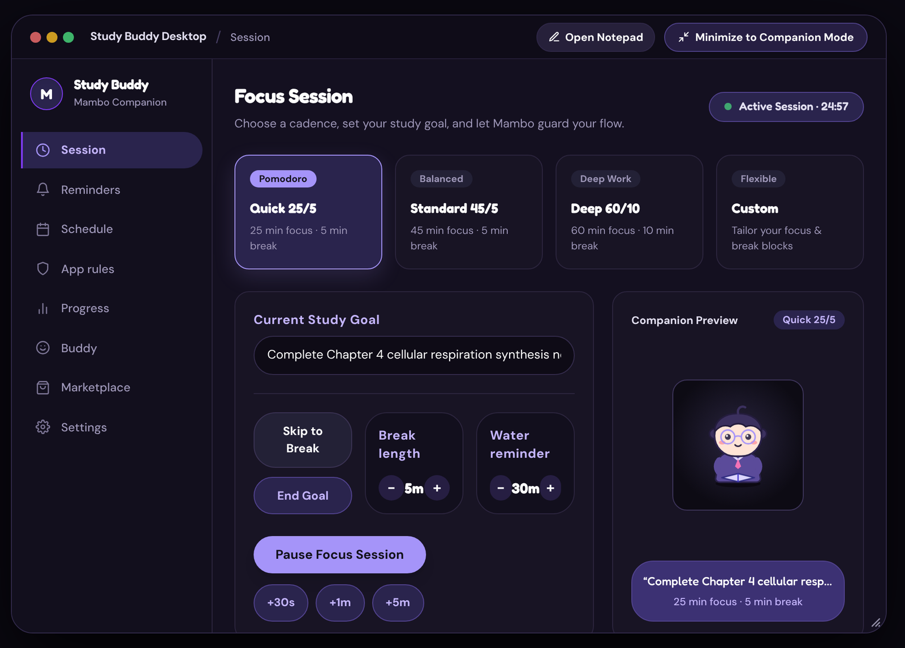
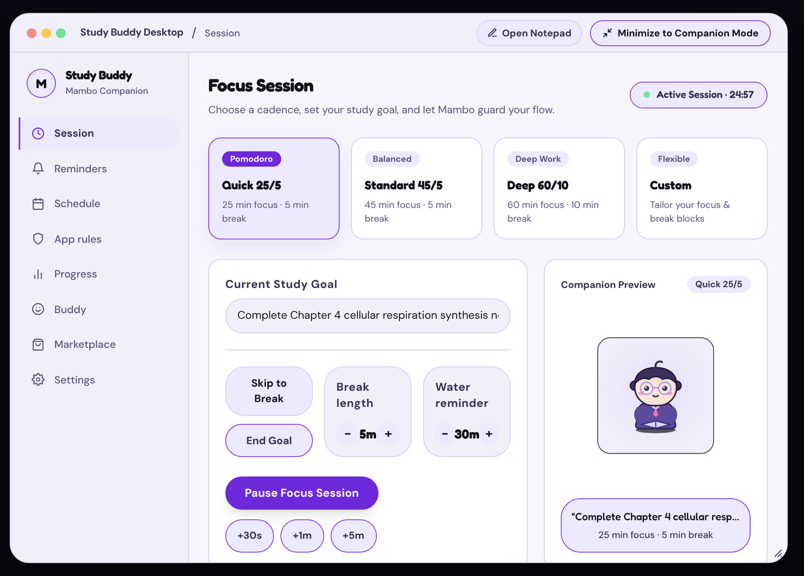
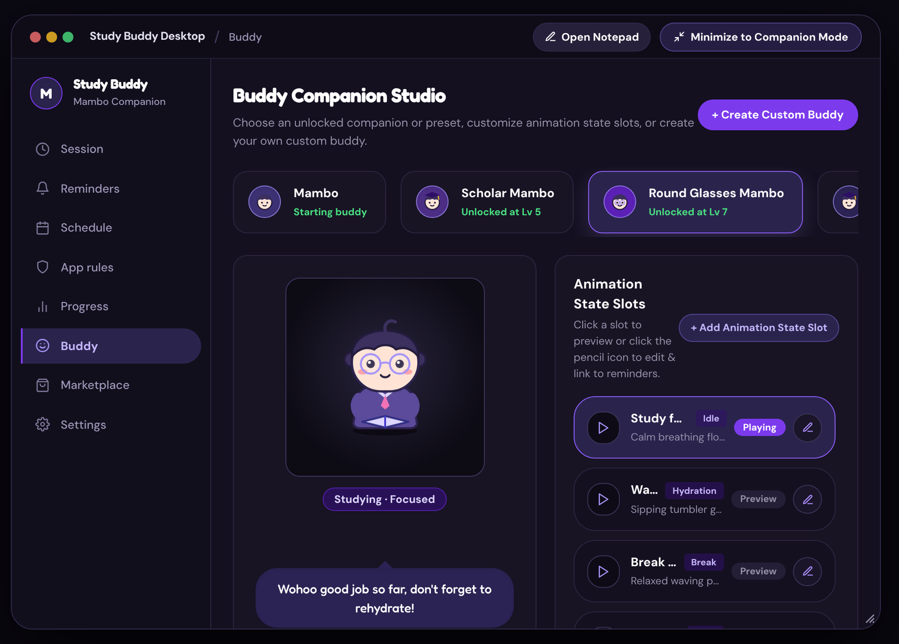
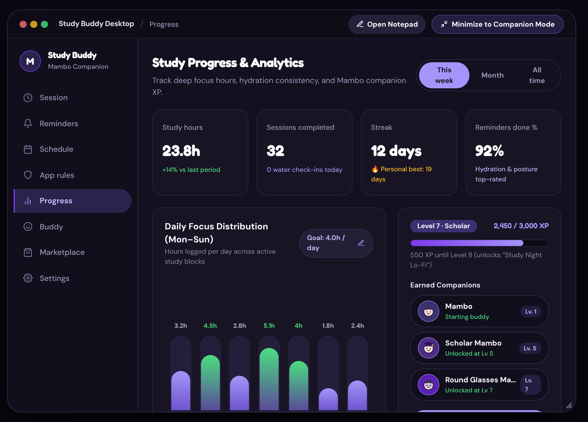

Study Buddy
A desktop focus companion. A small mascot, Mambo, runs your study sessions and asks for breaks with friendly overlays instead of locking your screen. I designed it in Figma, then built it by directing AI and reviewing every round myself.

Structure without the pressure
Focus and break timers, water reminders, and blockers, delivered in a friendlier way.
Designed in Figma first
Session, reminders, schedule, app rules, progress, buddy screens, break overlays, and the Mambo widget, in light and dark themes on shared tokens (Fredoka, DM Sans).


From frame to working overlay
The break overlay is the heart of the product: a calm card with a small plus to postpone. Figma held a placeholder; the build plays Mambo's states, with a gentler nudge for distracting sites.



Working with AI, on purpose
I directed the AI and kept the product decisions. Each round followed one loop.
Where human review changed the product
- Cut clutter: the Messages tab and a focus-timer pill
- Made the window behave like a normal app: resizable, no fullscreen, close tucks into Mambo
- Fixed low-contrast light-mode text against WCAG AA (formal audit still to do)
- One purple palette instead of blue and purple, with hover states on every desktop button
- Confirmation dialogs before delete, clear and sign-out actions
- Removed settings that did not work yet (cloud sync, "iPhone connected")


The desktop app
Editable reminders, a schedule for study blocks, and app rules that nudge you when a listed app or site opens mid-session. Auto-starting sessions from the schedule is next.
Companions and progress
Mambo is the starting companion; levels unlock more, and each companion's animations can link to a reminder, session or alert. A progress screen tracks focus hours, streaks and level.


What's next
Rolling updates, desktop first.
- Multi-user feedback loops: gathering longitudinal telemetry on nudge postponement intervals
- Smart activation: auto-detecting study domains to launch Mambo sessions seamlessly
- Mobile companion sync: extending session timers across phone and desktop
- WCAG AA compliance audit: formal contrast verification across dark and light themes